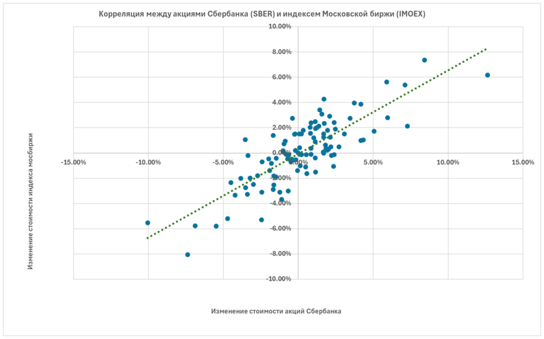
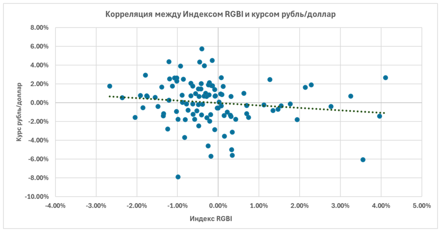
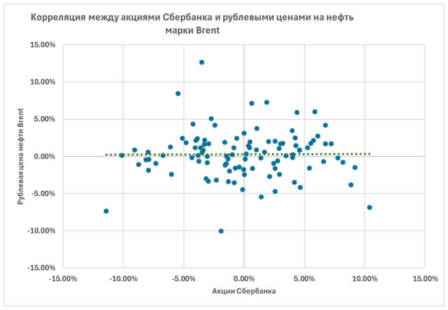

Корреляция — это взаимосвязь двух параметров друг с другом. То есть насколько тесно изменения одного связаны с изменением другого. Причём корреляция не описывает причинно-следственные связи, а только фиксирует «похожесть» движения активов.
Есть ещё одна особенность: корреляция измеряет только линейную зависимость. Нелинейные отношения между активами она может и «не заметить». Это понятие используют во многих дисциплинах — в биологии, статистике, физике, ну и, разумеется, в инвестициях. Простой бытовой пример: рост и вес человека взаимосвязаны — более высокие люди, как правило, тяжелее. То есть вес обычно коррелирует с ростом.
Практически все инвесторы слышали о диверсификации, но мало кто знает, что хорошая диверсификация невозможна без понимания корреляции активов в портфеле.
Если два актива ведут себя одинаково (растут и падают вместе) — у них высокая положительная корреляция. Если один растёт, а другой падает — отрицательная. А если между ними никакой закономерности — нулевая. Задача инвестора, который хочет собрать действительно диверсифицированный портфель, — подбирать активы с низкой или даже отрицательной корреляцией. Тогда в портфеле всегда будут и падающие, и растущие позиции. Это и придаёт по-настоящему диверсифицированному портфелю устойчивость при рыночных потрясениях.
Для этого используют коэффициент корреляции. Он безразмерный и меняется в интервале от −1 до +1. Посчитать его можно и самостоятельно, по формуле:
Положительная корреляция — оба актива растут или падают в одном направлении. Пример с фондового рынка: как связаны акции Сбербанка (SBER) и Индекс МосБиржи (IMOEX). На графике по горизонтали — недельные изменения цены Сбербанка, по вертикали — изменения индекса. Чем плотнее точки лежат к прямой, тем сильнее взаимосвязь. Здесь корреляция 0.82 — это высокий показатель.

Отрицательная корреляция — один актив растёт, когда другой падает. На нашем рынке ярко выраженную отрицательную связь найти трудно, но возможно. Например, Индекс государственных облигаций RGBI и курс рубль/доллар: коэффициент −0.14. То есть когда доллар растёт к рублю, госбумаги РФ обычно снижаются. Наличие корреляции не всегда можно объяснить причиной — но, если связь есть, ею можно пользоваться, даже не понимая её природы.

Отсутствие корреляции — переменные ведут себя по-разному, линейной связи нет. Пример: акции Сбербанка и рублёвая цена нефти Brent. На графике — просто хаотичный набор точек, никакой закономерности. Корреляция здесь 0.003, то есть практически нулевая.

В идеале в портфель стоит подбирать активы, которые плохо коррелируют друг с другом или имеют отрицательную корреляцию, — это лучший путь к хорошо диверсифицированному портфелю. Активы с низкой (ниже 0.5) или отрицательной корреляцией улучшают характеристики портфеля, делая его менее волатильным. Так, добавляя разные типы активов, можно выстраивать портфель под свою стратегию.
И напоследок — особенность, о которой лучше помнить каждому инвестору. Сама по себе корреляция между активами довольно устойчива. Но во времена очень сильных потрясений на рынке все корреляции рушатся: в обвал вниз едет всё разом, даже то, что обычно ходит порознь. Благо такое состояние обычно длится недолго. Но знать об этом лучше заранее.